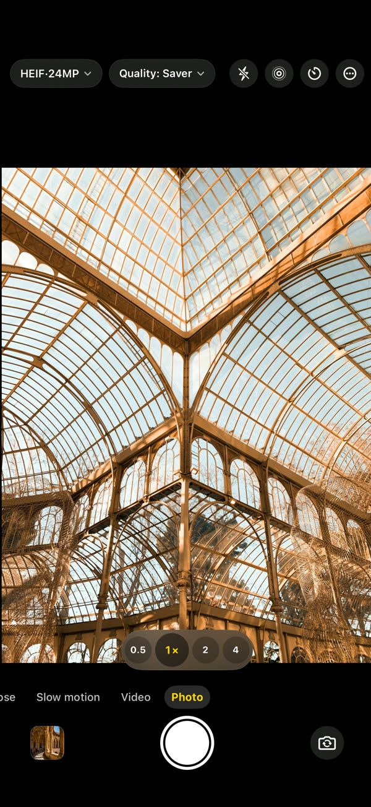
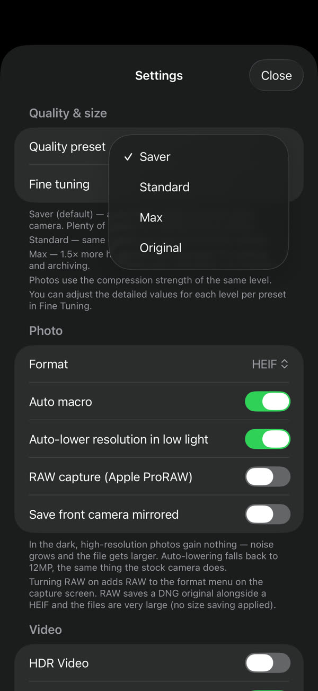
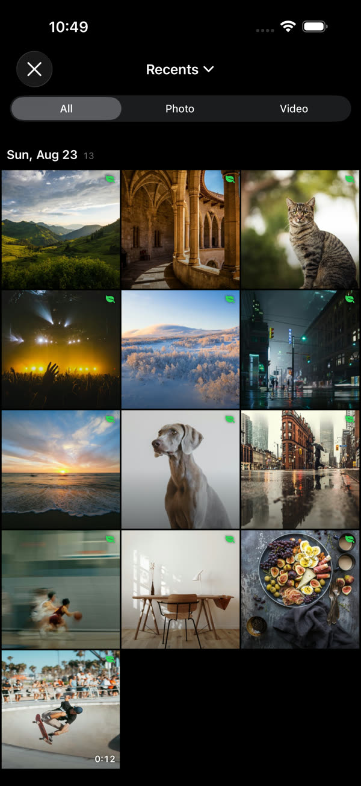
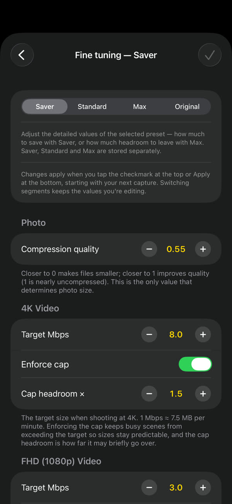
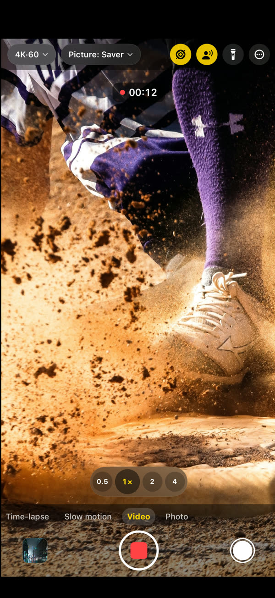

GramCamera
Same shot, smaller file.
GramCamera shoots the same way your stock camera does, but saves smaller files. It reduces file size without a visible drop in quality, so the same storage holds far more.
Download on the App StoreiOS 17 or later · iPhone and iPad

Around 60% less space, shot after shot.
Photo3.7MB → 1.5MB~60%
4K video169MB → 60MB / min64%
FHD video60MB → 23MB / min62%
Pick, shoot, and see the saving.




Everything you need, built in.
You choose how much to save
Saver, Standard or Max. Fine Tuning lets you set the target size for each resolution
Straight to the Photos app
No separate library. Your photos and videos go into the built-in Photos app
It shows what you saved
Every capture keeps a comparison against what the stock camera would have produced
A real camera
Photo, video, slow motion, time-lapse, 4K 60 fps, HDR video, Spatial Audio, lens switching and macro
Stays on your device
Captures live on your device and in your photo library. No account, no sign-in — Privacy